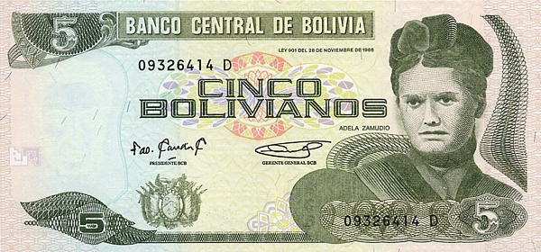
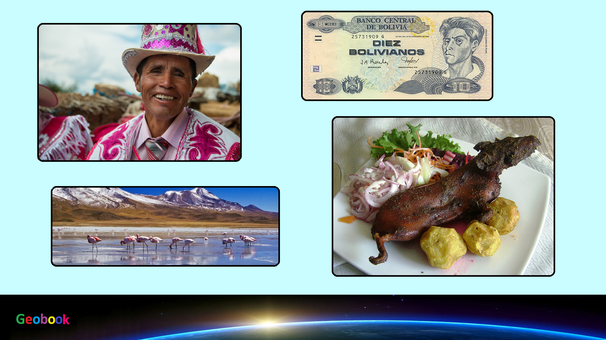

____
Валюта
Валюта в Боливии - Боливийский боливиано.
Курс: 1 Боливийский боливиано - 10,59 рублей (7 февраля 2021).
Боливиано был введён в 1864 году. 28 ноября 1986 года в обращение были введены банкноты номиналом 2, 5, 10, 20, 50, 100 и 200 боливиано. Банкнота 2 боливиано была заменена на монету в 1991 году, а 5 боливиано — в 2001. С 2018 года был начат выпуск банкнот новой серии: 10, 20 и 50 боливиано были введены в обращение в 2018 году, 100 и 200 — в 2019.

История
Первый боливиано (1864—1963)
Боливиано был введён в 1864 году, первоначально он делился на 100 сентесимо, а 1870 году — 100 сентаво. Валюта получила своё название в честь Симона Боливара.
В тот период боливиано обменивался по курсу 1 боливиано = 5 французских франков. На 31 декабря 1908 года валюта получила золотой стандарт, и обменивалась по курсу 12 боливиано = 1 британскому фунту стерлингов.
В 1940 году боливиано был привязан к доллар США по курсу 40 или 55 боливиано = 1 доллару США, но в результате инфляции боливиано продолжал падать в цене. В 1963 он был заменён на боливийское песо, или песо боливиано: (ISO 4217: BOP) по курсу 1000 боливиано за 1 песо.
В Боливии в 1928 году произошла денежная реформа в соотношении 1:1.
Но поскольку в банках осталось большое количество не выпущенных в обращение купюр боливиано образца 1911 года, было решено пустить их в обращение параллельно с новыми боливиано, снабдив надпечаткой на лицевой стороне.
Из-за того, что Национальный банк Боливии, осуществлявший эмиссию купюр образца 1911 года, поменял за это время название на Центральный банк Боливии, надпечатки выполнялись с сохранением прежнего номинала в одну строчку чёрной краской: Центральный банк Боливии.
Второй (новый) боливиано (с 1987)
После периода гиперинфляции песо боливиано был заменён в 1987 году на новый боливиано по курсу один миллион старых песо на один новый боливиано. 1 новый боливиано был равен одному доллару США.
При проведении реформы правительство страны решило использовать большое количество отпечатанных ранее «гиперинфляционных» банкнот со множеством нулей как мелкие разменные деньги, заменяющие монеты. На них ставились надпечатки, понижающие номинал от миллиона до двух миллионов раз.
____
